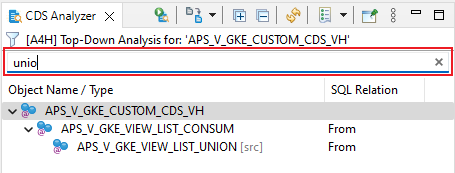
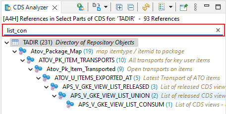
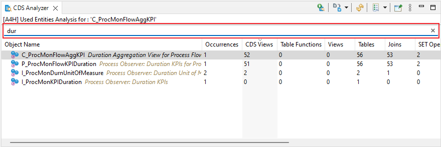

Release Notes of ABAP Search and Analysis Tools 2.0.0
Due to breaking changes in this release, the abapGit repository
abap-search-tools needs to be
updated to version
2.0.0 in the targeting ABAP system
ABAP Object Search
Features
- Redesign of search dialog
New ABAP Object Search Dialog
- New search type View
- New search type Method
- New search type Message
- New Filters in CDS View Search:
- changedby - Last Changed By
- changed - Last Changed Date
- comp - Software component
- appl - Application Component
- basefield - Base Field Usage (i.e. matnr as Product -> matnr is the base field)
- New Filters in Database Table Search:
- changedby - Last Changed By
- changed - Last Changed Date
- comp - Software component
- appl - Application Component
- enhcat - Enhancement Category
- maintflag - Maintenance Flag
- storetype - Storage Type
- buffering - Buffering Status
- buffertype - Buffering Type
- dataclass - Data Class
- sizecat - Size Category
- include - Usage of Include Structure
- New Filters in Class/Interface Search:
- changedby - Last Changed By
- changed - Last Changed Date
- comp - Software component
- appl - Application Component
- New unified Search Favorites (More Information)
New Search Favorites
- Text Filter possibility for Search Result View
Text Filter for Search Result Viewer
- New option to paste clibpoard rows as values in name or filter fields
 Custom Paste Action in search field
Pasted content in search field
Custom Paste Action in search field
Pasted content in search field
CDS Analysis
General Updates
- Show overlay icon for deprecation API state of CDS Views
Top-Down Analysis
- New Text Filter Option

Text Filter in Top-Down Analysis
- New Filter Option to show only certain sub tree of the analysis
Filter on certain sub tree in Top-Down Analysis
- Enable display of CDS View Entities with Except or Intersect
Where-Used Analysis
- New Recursive Loading option for Where-Used-in-CDS Analysis
- New Filter Option to show only certain sub tree of the analysis
Sub Filter Option in Where-Used-in-CDS Analysis
- New Filter Option to show only CDS Views with API state Released
- New Text Filter Option

Text Filter in Where-Used-in-CDS Analysis
Used Entities Analysis
- New metrics
- New Text Filter Option

Text Filter in Used Entities Analysis